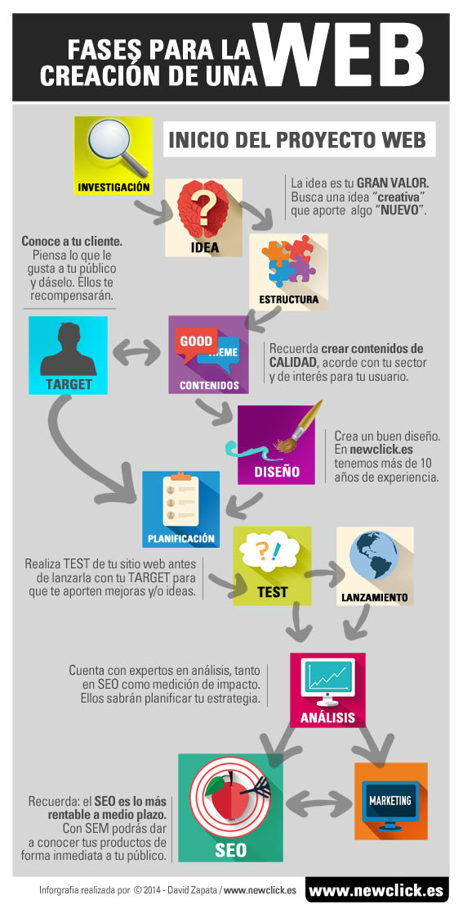

Etapas de la creación de una página web
Conoce nuestro proceso de creación web
FASES PARA LA CREACION DE UNA PÁGINA WEB
La creación de una página web o el desarrollo a medida de un proyecto para el diseño de una página web, existen al menos, 6 etapas esenciales. No hay que olvidar que el fin de una página web no es otro que adaptar un modelo de negocio al mundo online. Durante cada etapa de vida de cada ciclo, el contenido está en continua actualización y deben consolidarse con el fin de mejorar la experiencia del usuario y reducir costes en el desarrollo. La página web, a diferencia de documentos impresos, en un soporte que está en continua mejora o desactualización y donde realmente nunca se termina. Una página web está en continuo crecimiento y evolución. Una página web está siempre vida.
1.- INVESTIGACIÓN
La investigación para la creación de una página web se debe tomar como referencia páginas web de la competencia ya existes. Una buena página web requiere una investigación veraz, exigente y profunda. Se deben analizar diferentes campos de actuación, desde el modelo de negocio, público objetivo, competencia y objetivos de resultados alcanzables reales a corto/medio plazo.
Modelo de negocio de nuestra página web: Dependiendo del sector al que vaya destinado, debe adaptarse a las necesidades del sector y examinar los diseño web que ya se hayan realizado (Competencia).
Público Objetivo al que va destinada nuestra web: Es de vital importancia saber a quién va dirigida nuestra web, conocer sus necesidades presentes y futuras. Para el diseño web tenemos que tener claro como vamos a plasmar de la manera más sencilla, eficiente y atractiva las necesidades de nuestros usuarios a medio y largo plazo, creando de esta forma una página web que ofrezca soluciones a nuestros clientes.
Nuestra competencia: Dentro de la competencia podemos aprender, analizar y estudiar lo que hacen bien y lo que hacen mal. Saber exactamente quienes son nuestros competidores reales nos ayudará a adaptar nuestra web para mejorar lo ya existente y canalizar así mejor a nuestro target. Además, la competencia nos aportará una experiencia de recorrido que nosotros con nuestra web vamos a empezar a andar. También podemos investigarlos para extraer nuevas tendencias de negocio y prospección.
Nuestros objetivos: Cuando se realiza el diseño de una página web, hay que construir ideas sobre la filosofía de la empresa/modelo de negocio y crear metas alcanzables. Se deben marcar objetivos y definir cual es exactamente nuestra finalidad. El diseño de la página web tiene que tener en cuenta cuales van a ser los objetivos a cumplir. De esta forma podremos evaluar si nuestra web a fallado en algo o no hemos sabido transmitir nuestro modelo de negocio. Los objetivos que se marquen deben ser REALES.
2.- PLANIFICACIÓN
Cuando se diseña una página web, la planificación juega un papel importante para anticiparnos en un medio que está en continuo cambio, nos ayudará a crear una estrategia, ya no sólo de difusión sino también de los contenidos que puedan ser de interés para nuestra audiencia. La elección y disponibilidad del dominio es una parte de peso a tener en cuenta dentro del desarrollo de una página web.
El nombre del dominio es de vital importancia, pudiendo optar por la elección de un dominio de “marca o branding” (nombre de la empresa) o decidirnos por un dominio EMD (Extact Mach Domain) que son aquellos que incluyen dentro del dominio la palabra clave “keywords” de nuestro sector. La decisión del dominio debe tomarse con tranquilad y a conciencia.
3.- ARQUITECTURA Y CONTENIDO DEL SITIO WEB
En base a las preferencias de los contenidos de la página web, creamos una esquema o mapa de arquitectura para testar visualmente como se organizan elementos que la componen, los contenidos y la estructura del sitio. La usabilidad (UI) y la experiencia del usuario (UX) es otro factor que no podemos pasar por alto, ya que la fácil navegación y una correcta estructuración del sitio, hará que nuestra audiencia se sienta cómoda en nuestro sitio web y la experiencia sea satisfactoria.
4.- DISEÑO WEB, CONSTRUIR Y TESTAR
La creación de la gráfica, el diseño web y plasmarlo en nuestro sitio nos dará el aspecto visual, de esta forma sabremos captar lo que te transmite con lo que se está viendo. Una vez creado el contenido y adaptado el diseño web, debemos ser exigentes en las gráficas y el cuidado de las imágenes, además la optimización de las mismas.
Una vez finalizado esta fase, tenemos la estructura web finalizada en modo de pruebas y ahora debemos testar tanto el diseño web como el desarrollo con usuarios y grupos de interés por parte de la empresa (target).
Una vez finalizada la etapa de test, pasamos a PUBLICAR y pasar la página web a “producción”. Ya tenemos en “vivo” la web ahora a ver que tal funciona.
5.- OPERAR, OPTIMIZAR Y EVALUAR
En esta etapa el sitio web está con un continuo control a tiempo real y en constante mantenimiento para ir optimizando y realizando continuas mejoras en el sitio web. Analizamos mediante herramientas de medición (Google Analytics) para obtener informes de rendimiento y garantizarnos que la página web esté funcionando como deseamos y esté cumpliendo nuestras perpectivas.
En base a los datos obtenidos mediante la medición, evaluaremos y está “cumpliendo” con nuestras expectativas. El tener una correcta medición de los datos del sitio web, nos facilitará información para realizar las mejoras en el sitio o reestructurarla por completo.
Una vez consolidemos los contenidos dentro de la página web, podremos saber si finalmente la operación ha sido rentable.
6.- DESPUÉS DEL LANZAMIENTO
Para potenciar los resultados del sitio, es más que recomendable y necesario realizar campañas de marketinkg online y hacer una importante inversión en SEO (Search Engine Optimization) para generar tráfico a nuestro sitio. Diseñar una estrategia de comunicación que convierta a nuestros visitantes en clientes y conseguir una mayor rentabilidad de nuestro sitio web. También se pueden realizar campañas en buscadores SEM para dar a conocer sus productos a su público y conseguir resultados en un corto periodo de tiempo.
¿Por qué realizar SEO?
Actualmente el SEO está considerado, junto con otros medios de marketing online, la manera MÁS RENTABLE a medio plazo de conseguir conversión en nuestro sitio web. Hay que tener en cuenta que el SEO no es algo inmediato como puede serlo el SEM, ya que el SEO es a medio plazo y más “una carrera de fondo”, donde hay que ir construyendo día a día y donde el tiempo invertido juega un factor importante.
Si desea que te asesoremos para la creación de tu página web, estaremos encantados de ayudarte y aplicar nuestra experiencia en tu proyecto web.
